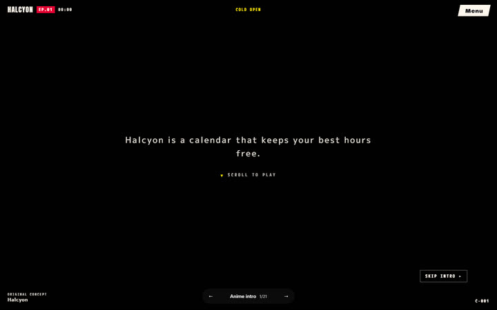
Anime introtheme: { style: anime-intro }Your scroll is the playhead of an anime opening. A silent cold open, a title card that smashes in, then hard cuts from shot to shot, freeze frames with vertical name cards, a VS split and an eyecatch, ending on the full-cast pose and a NEXT EPISODE card.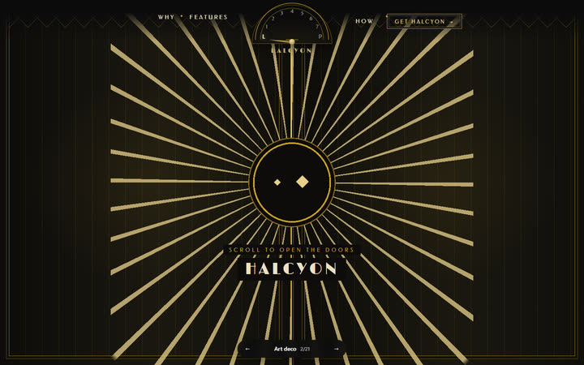
Art decotheme: { style: art-deco }An opening night. Scroll parts gold-lacquered doors on the centre axis to reveal a spotlit headline under a fanning sunburst; every scene unfolds symmetrically from the centre, features are dealt in mirrored pairs, stats are billed on a marquee with chasing bulbs, an elevator dial sweeps floor by floor, and doors close and reopen between scenes until the ADMIT ONE invitation.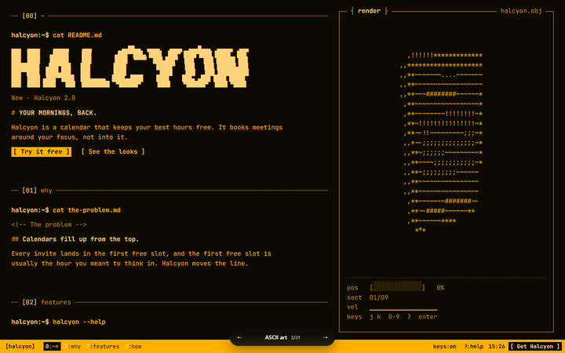
ASCII arttheme: { style: ascii-art }A terminal session. Scrolling types each section's command at the prompt and prints the reply line by line (features as --help flags, numbers as neofetch, steps as a boot log, questions as a man page), with a live ASCII render of the product, a tmux status bar and keyboard shortcuts.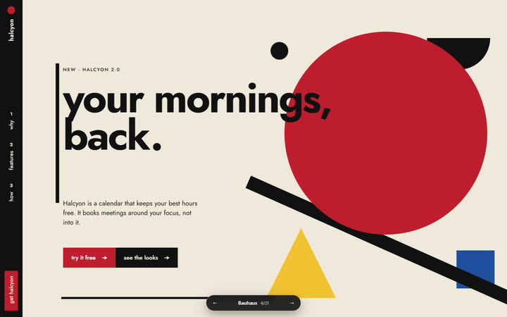
Bauhaustheme: { style: bauhaus }One pinned poster that recomposes as you scroll. A red circle, a black bar, a yellow triangle and a blue square slide, rotate and re-dock into a new designed layout for every section; the circle that was the sun becomes the pie chart and finally the button.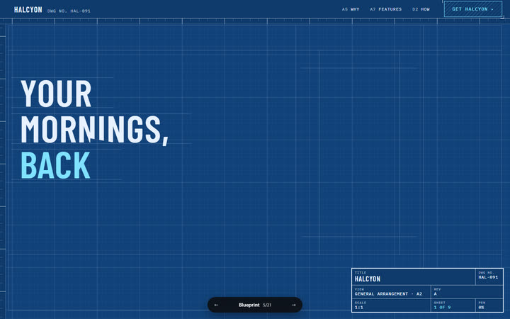
Blueprinttheme: { style: blueprint }One living drawing sheet. A plotter pen at constant speed drafts the product as you scroll (construction lines, outlines, dimensions whose values are the claims, leaders to a bill of materials) while the camera pans from view to view; the title block counts the sheets and the finale is an APPROVED stamp.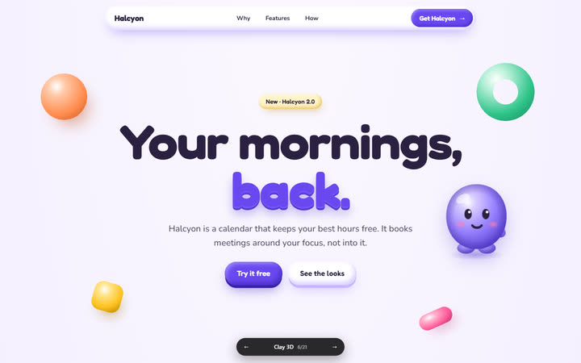
Clay 3Dtheme: { style: clay-3d }Soft toys on a table. Everything has mass and squish; cards drop in and squash on landing, tiles wobble like jelly when you fling the page, a clay buddy tumbles and hops from tray to tray, and candy buttons push in under your finger.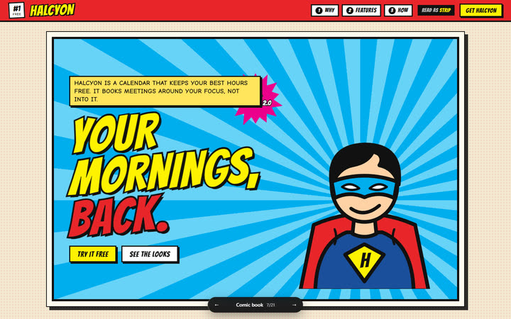
Comic booktheme: { style: comic-book }Read it like a comic. Each section is a page of panels, and every scroll moves your eye to the next panel. Captions slide in, balloons pop up in order, and the camera pulls back to show the whole page before you turn it.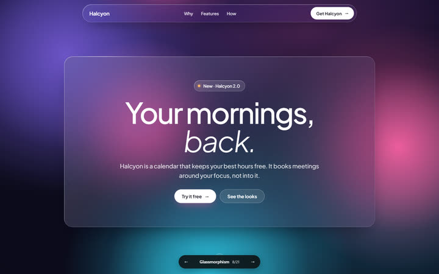
Glassmorphismtheme: { style: glassmorphism }Windows over a living world. Every word sits on frosted glass while a saturated colour world drifts behind at its own speed and changes hue section by section; a pinned glass lens holds still while the product turns beneath it, and feature layers fan apart in depth.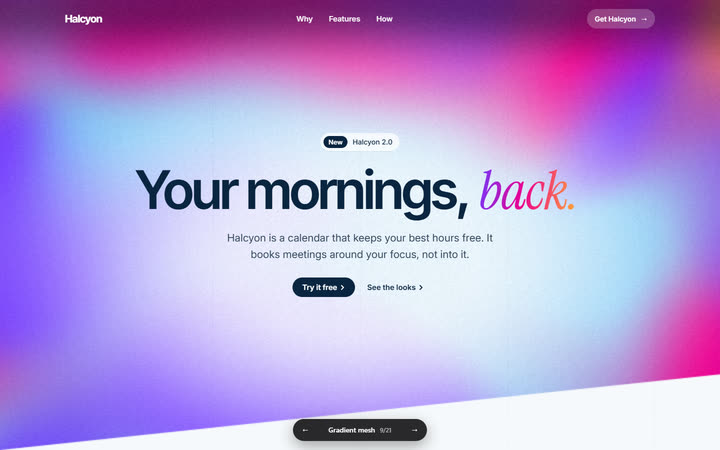
Gradient meshtheme: { style: gradient-mesh }Weather. One slowly breathing colour field behind the page (a single WebGL canvas) that bookends the hero and the closing band, wakes in small patches on hover, ruffles when you scroll fast and quietly changes hue from chapter to chapter; around it, calm editorial whitespace. Nothing pins, snaps or cuts.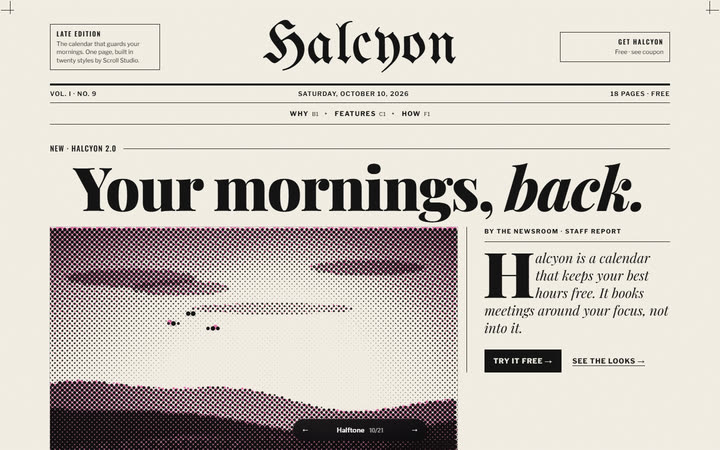
Halftonetheme: { style: halftone }Reading a freshly printed paper. A front page with a masthead and a lead story in columns; pictures that resolve from coarse dots to a fine screen as they reach reading position, with a printer's loupe on hover; section fronts that print plate by plate in CMYK; classifieds, dot-field infographics, letters to the editor and a clip-out coupon.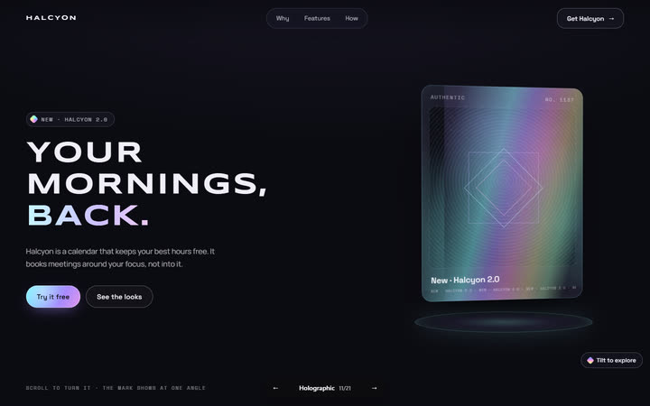
Holographictheme: { style: holographic }The information is in the angle. Every section is a rigid holographic plate that turns as you scroll past it; spectral light sweeps across its foil and a hidden mark appears at one narrow angle. Your pointer is the light source; features are a binder of trading cards; sections materialise behind a projector scan.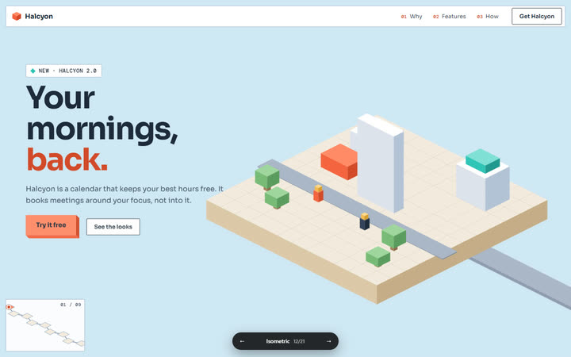
Isometrictheme: { style: isometric }A fixed-angle drone over a tiny model world that builds itself. Every section is a district on one map; the camera glides diagonally between them while tiles drop in and buildings extrude, stats rise as towers, a token drives the road between steps, and the last district holds a keycap button.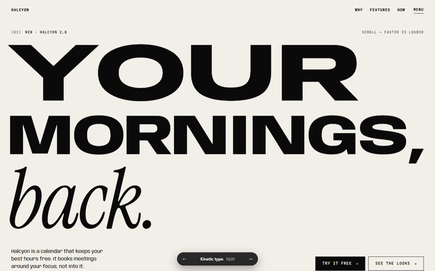
Kinetic typetheme: { style: kinetic-type }An instrument made of letters. Giant words inflate on their width and weight as they arrive and condense as they leave, lines skew and stretch with your scroll speed, marquees surge and reverse, and sections cut by colour inversion.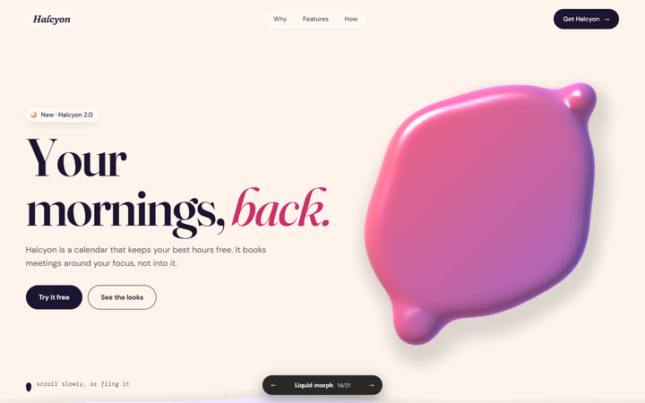
Liquid morphtheme: { style: liquid-morph }Nothing cuts, everything becomes. One glossy blob morphs into each section's idea, stretches and wobbles with your scroll speed, divides into the stats and fuses through the features, while section edges arrive as moving liquid surfaces.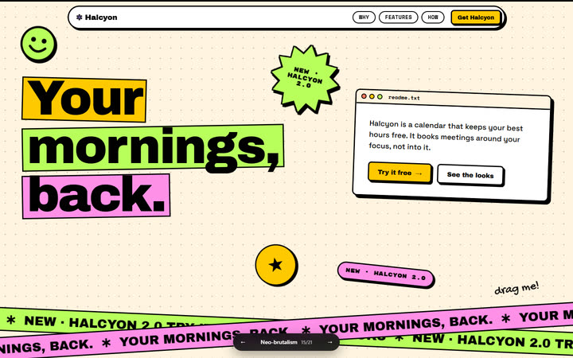
Neo-brutalismtheme: { style: neo-brutalism }A desk you fill up and can mess with. Every scroll threshold slaps something down with a spring and it stays there, feature cards stack into a deck, marquee bands race with your scroll, stickers and windows can be grabbed and flung, and every button sinks into the page.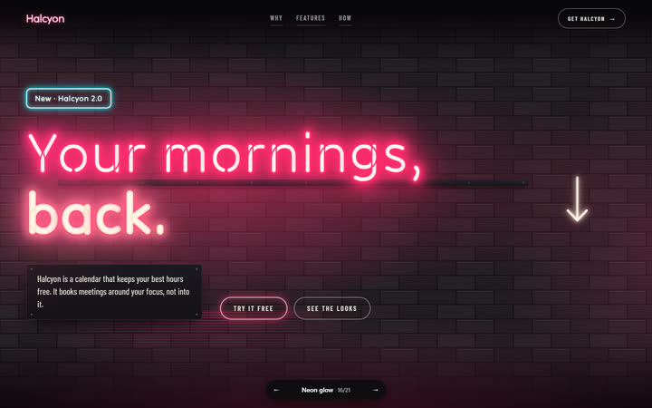
Neon glowtheme: { style: neon-glow }The lights come on as you arrive. A walk down a night street where each section's headline is a tube sign, unlit glass until you reach it, then it stutters on and floods the wall with its colour while the one behind you dims. Features light in sequence, stats are segmented tube numerals, and the call to action is the OPEN sign.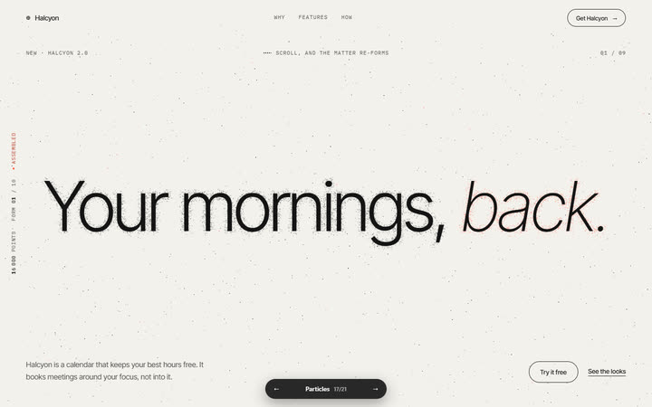
Particlestheme: { style: particles }One handful of living sand. The same swarm of points re-forms into every section's subject (the headline, the phone, the numbers, the logo), migrating through a turbulent swirl as you scroll; the pointer is a hand in the sand.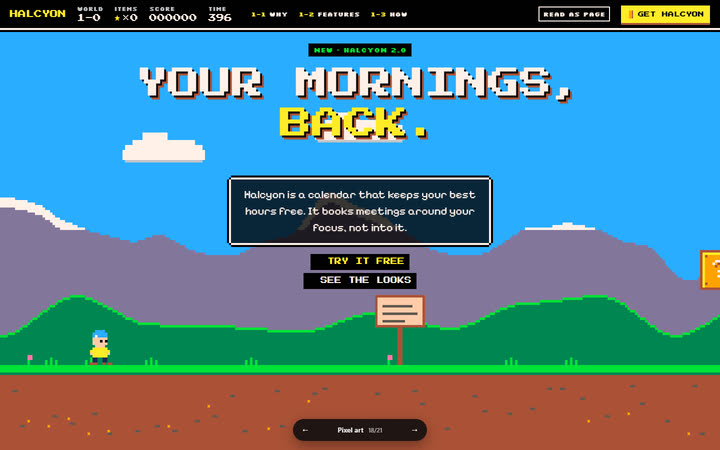
Pixel arttheme: { style: pixel-art }The site is a side-scrolling game. A title screen says PRESS START; each scroll notch walks a sprite through the level in whole pixels, features pop out of ? blocks as ITEM GET! cards, the testimonial is an NPC whose dialog advances a notch at a time, stats are an RPG status sheet and the call to action is COURSE CLEAR and a CONTINUE? menu. A READ AS PAGE switch shows it as a plain manual.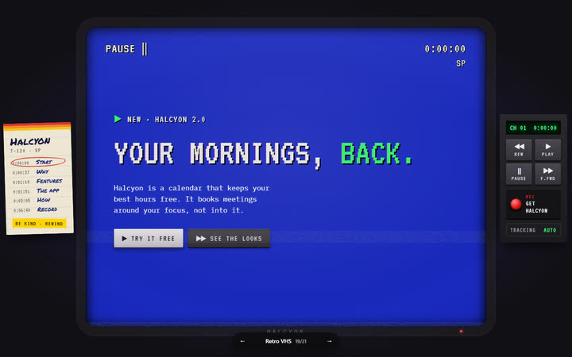
Retro VHStheme: { style: retro-vhs }A tape on a 4:3 TV. Scroll is the transport, so the on-screen display reads PLAY, PAUSE, SEARCH or REW with a running tape counter; every section arrives mistracked and locks, nav jumps are channel changes, and the call to action is ● REC.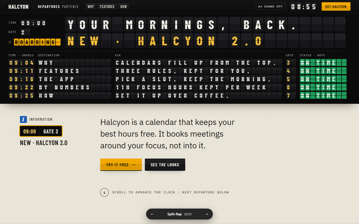
Split-flaptheme: { style: split-flap }A station departures board. Scrolling advances the station clock; at each section the whole timetable clatters up one row, flap by flap, and the boarding row opens its detail at the information desk below.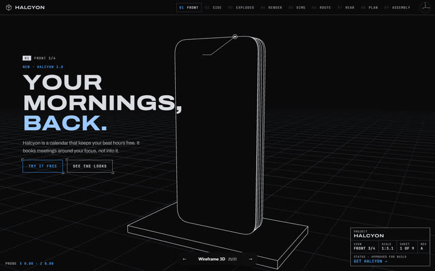
Wireframe 3Dtheme: { style: wireframe-3d }You fly through the blueprint. One world drawn only in lines, one continuous camera path from station to station; the copy is pinned to the model by leader lines, numbers are dimensions, the features fly apart as an exploded view with a parts list, and the line drawing solidifies into the product before the final assembly is approved for build.